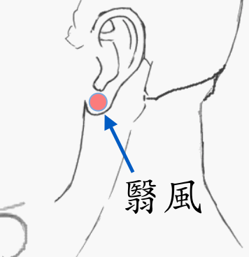

【穴位名稱】: 翳風 (SJ17)

【治療症狀】: 膈肌痙攣(打嗝) 周圍性顏面神麻痺 三叉神經痛 面神經麻痺 口眼歪斜 牙痛 耳嗚 耳炎 聽力問題 腮腺炎 中耳炎
【取穴位置】: 耳垂後耳根部，顳骨乳突與下頜骨下頜支後緣間凹陷處。《針灸甲乙經》：「在耳後陷者中，按之引耳中」；《針灸集成》：「在耳根部，距耳五分」。
【針刺方法】: 向上角或對側內眼角方向刺入1～1.5吋；如治聾可向內上方刺入；治啞可向內下方刺入；治面癱時還可向下頜骨前面的上下方透刺.不用直接灸，艾條溫灸5～15分鐘。
回前頁